The admin surface, the hardening set and the operations runbook. Merged and deployed on 4 October 2026. Every flag is off, all three journey crons ship disabled, and nothing in this phase has contacted a person.
What an operator sees today, before anything is switched on.
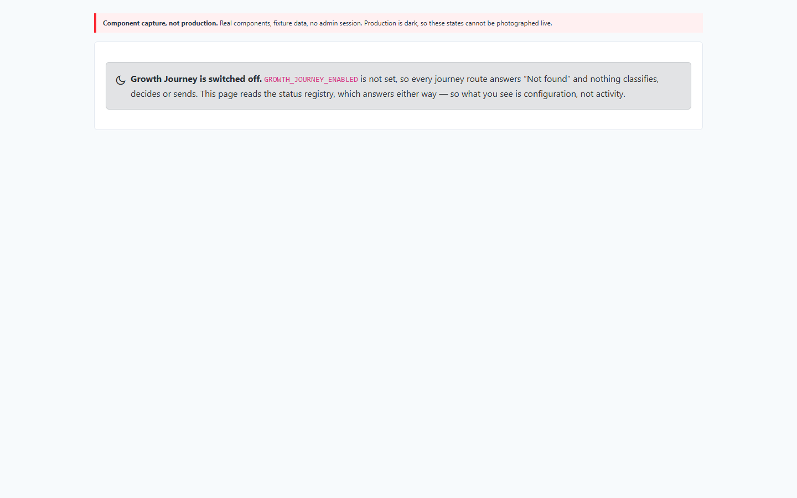
The other state that looks exactly like a working system.
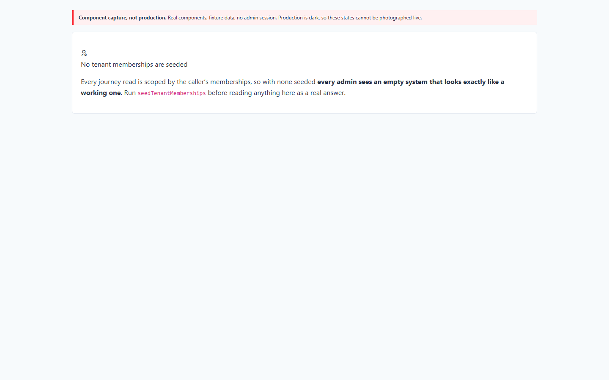
tenant_memberships is empty, so this is the state you will actually meet first.Where you start: is this on, and does it have anything in it?
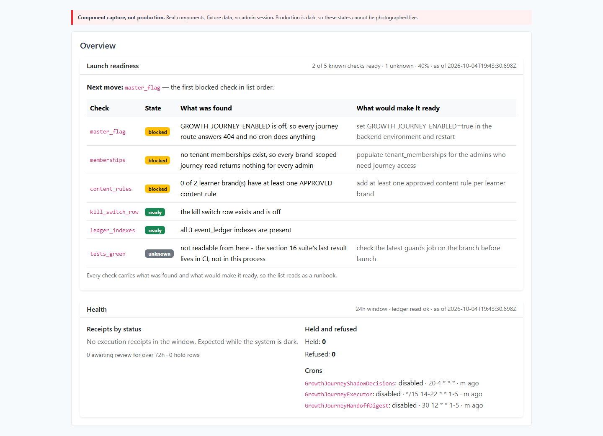
ready is three-state. tests_green is neither true nor false — "not readable from here, the suite's last result lives in CI" — and it counts neither as ready nor in the denominator.next_move is the first blocked item in list order, so the list is worked top-down rather than by whatever looks easiest.disabled with last_run_at never — "never ran" and "ran and found nothing" are different facts.The evidence behind every brand and path assignment.
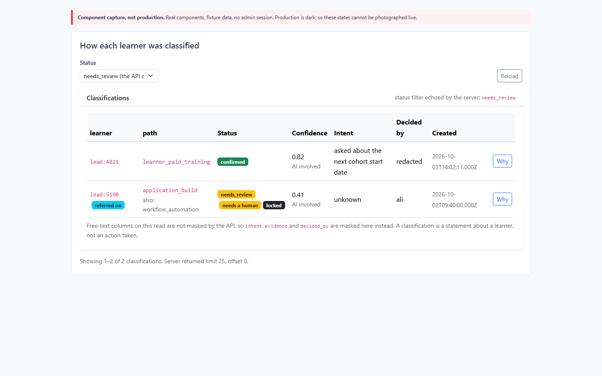
referral_target_brand_id: an AI Flotation subject asking for business training is referred to Colaberry Business rather than served content AI Flotation does not sell.decided_by on the first row reads redacted — that column can hold an email, so the API masked it and set a separate flag saying which happened."0.820" — a DECIMAL over JSON — and is rendered without being coerced into a float.Every decision here is shadow: recorded, never acted on.
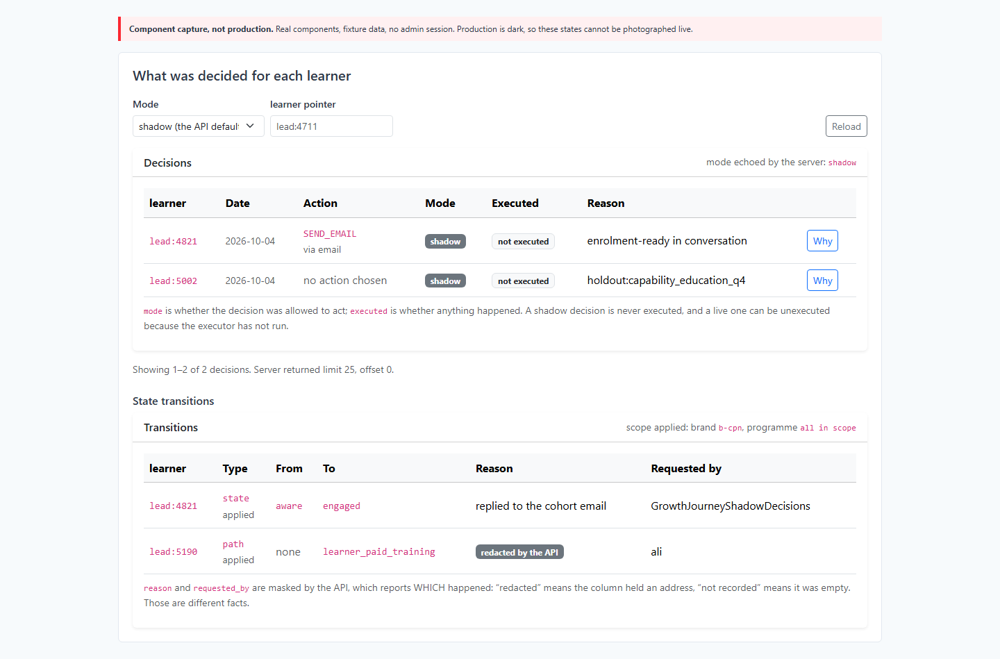
holdout:capability_education_q4 — this person was deliberately left alone so the team can measure whether the messaging works at all. That is not a failure, and the tab does not present it as one.SEND_EMAIL and has executed: false. Nothing on this screen has contacted anyone.The first place to look when decisions seem stale.
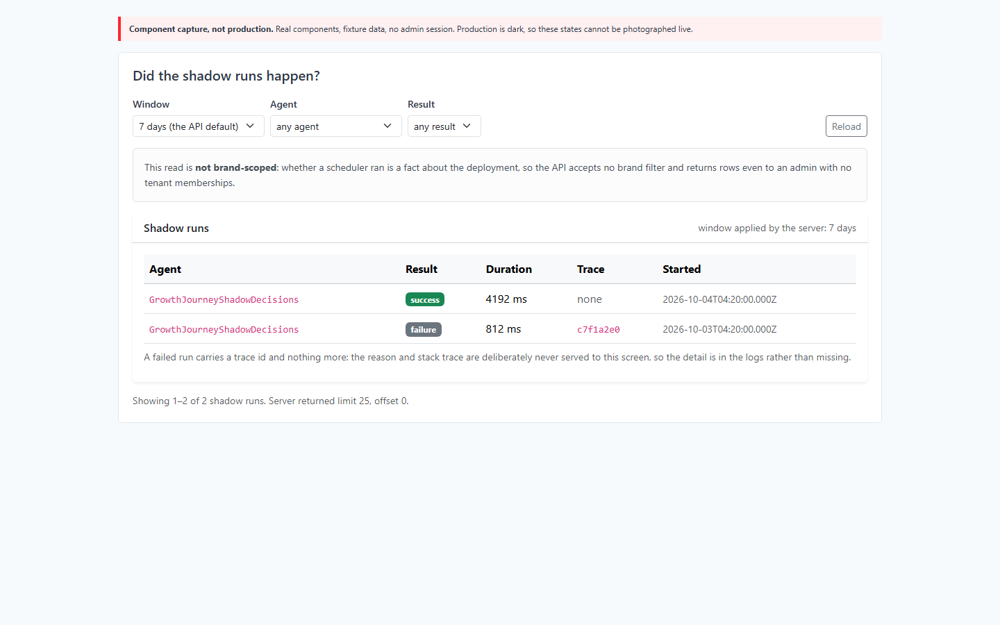
trace_id. The reason and the stack trace are deliberately never projected to this surface, so the trace id is what you take to the logs.The tab that enforces the brand boundary.
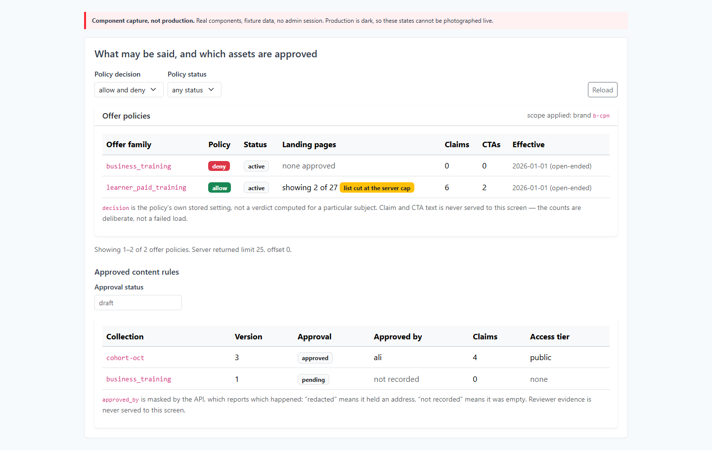
approved rule sits beside a pending one. Only approved content is usable — pending counts for nothing, and seeing both makes that concrete.business_training is deny. A deny always outranks an allow, however many other rules permit it.The number to read is the lift, and the interval is the finding.
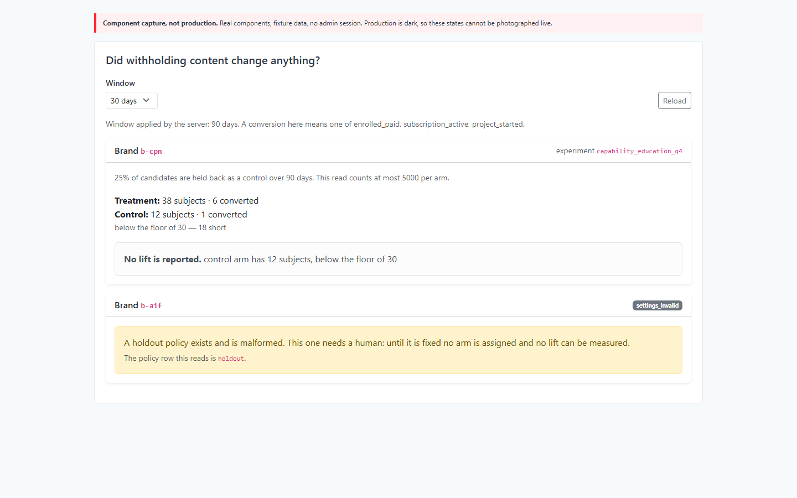
Measured union makes printing a number here structurally impossible when the arms are too small. There is no figure to misread.settings_invalid: "A holdout policy exists and is malformed. This one needs a human." That is one of four possible absences, and the only one requiring a person — kept distinct from the three that do not.A handoff is the system saying a human should take this one.
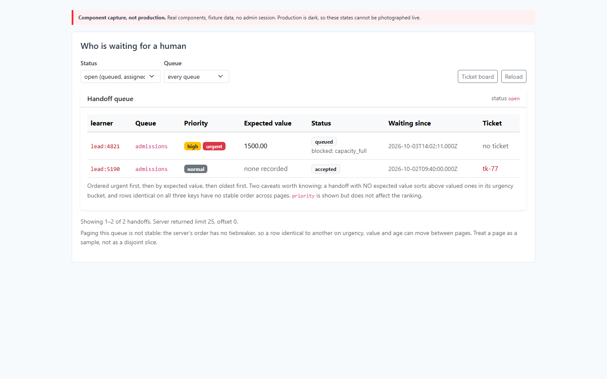
capacity_full. A blocked assignment is stated, never silently dropped.priority has its own column and is not what the list sorts by.The single most important distinction on the whole surface.
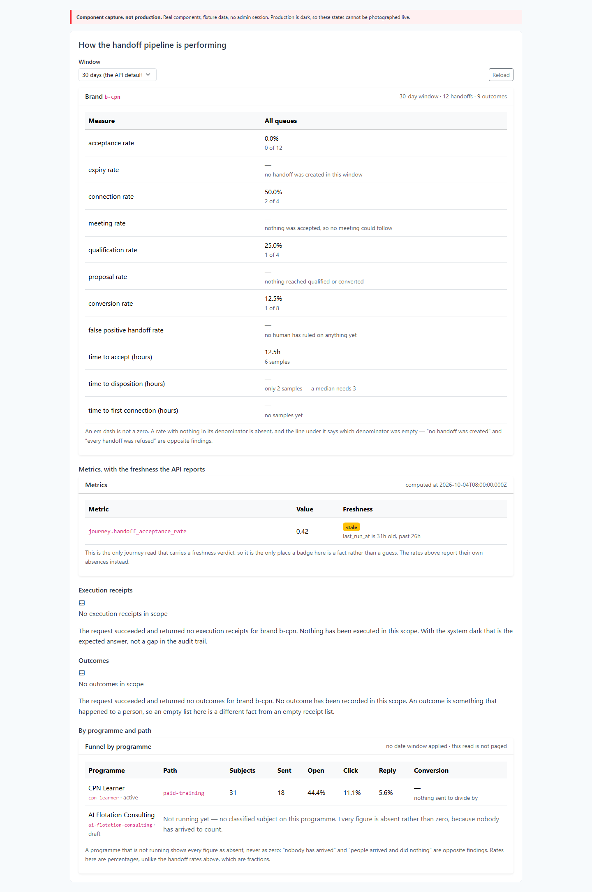
0.0% "0 of 12" sits directly above expiry rate — "no handoff was created in this window". A real zero means every handoff was refused, which is a crisis. An absence means none existed, which is a quiet week. A screen printing 0% for both would say the opposite of the truth.no_denominator is not actionable; these are.stale with the API's own sentence. This is the only journey read carrying a freshness verdict, so it is the only place a badge is a fact rather than a guess.Everything else on this workspace reads.
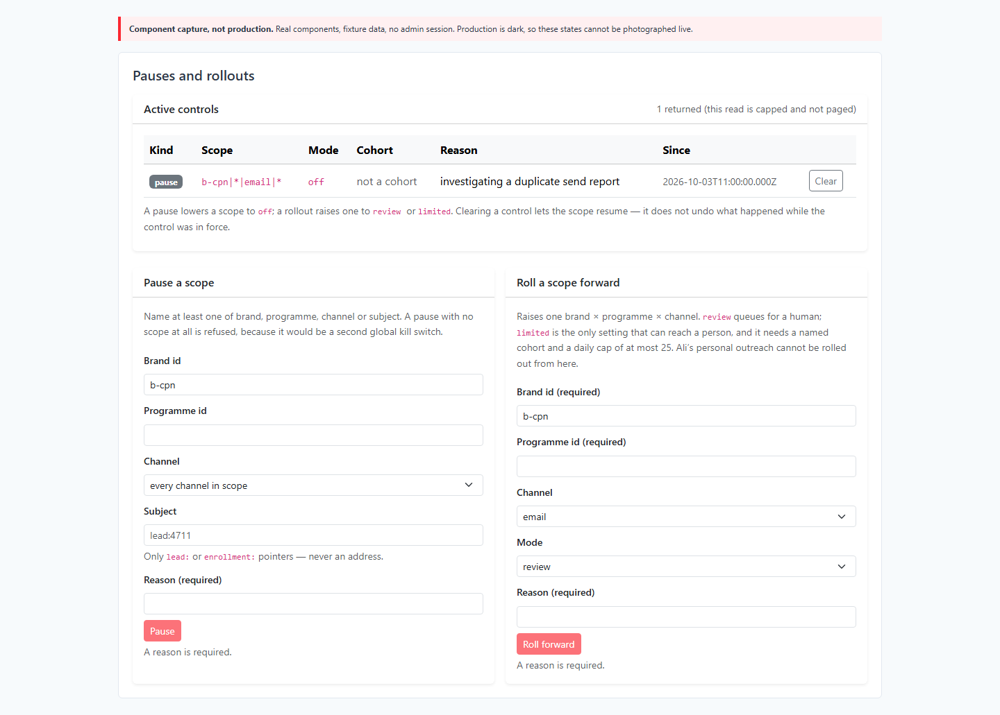
ali_outreach can be paused here and cannot be started here. It is review-only by construction and has no rollout route.The only images that would evidence production behaviour.
Not captured. Both need an authenticated admin session against the live app. The available token expired 43 hours before this run, and this loop does not mint production credentials. The capture script detects the expiry and refuses rather than photographing a login screen — an image that looks like evidence and is not would be worse than none.
To produce them, with a fresh token:
HARNESS_DIR=<dump dir> CAPTURE_HOST=https://www.refactored.ai \
CAPTURE_ADMIN_TOKEN=<jwt> node scripts/captureGrowthJourneyScreenshots.jsProduction evidence that needs no screenshot, gathered on the box on 4 October 2026:
| Check | Result |
|---|---|
| Phase 6 backend code inside the running container | memberships_populated present in
dist/controllers/growthJourneyStatusController.js; all three journey
routers in dist/routes/admin/ |
| Phase 6 frontend inside the nginx image | 3 chunks carry GROWTH_JOURNEY_ENABLED, 2 carry the performance
heading; negative control 0 |
| Backend liveness | GET /health → 200 |
| Journey API, unauthenticated | 401 on all four status paths — note this proves the guard
answers, not that the routes are mounted, because
/api/admin blanket-401s before routing |
| The three journey crons | all enabled = false, last_run_at never |
| The flags, as the container has them | GROWTH_JOURNEY_ENABLED and
GROWTH_JOURNEY_EXECUTION_ENABLED both unset |
| The three ledger indexes | present and indisvalid = t — checked directly,
because readiness only checks their names |
| Nothing sent | executions 0 · in-app nudges 0 · outcomes 0 · decisions 0 · handoffs 0 ·
controls 0 · classifications 0 · growth_journey.* ledger events
0 · scheduled emails held by a journey hold 0 |
Collect every heading and bullet above into one block, to paste into a reply.